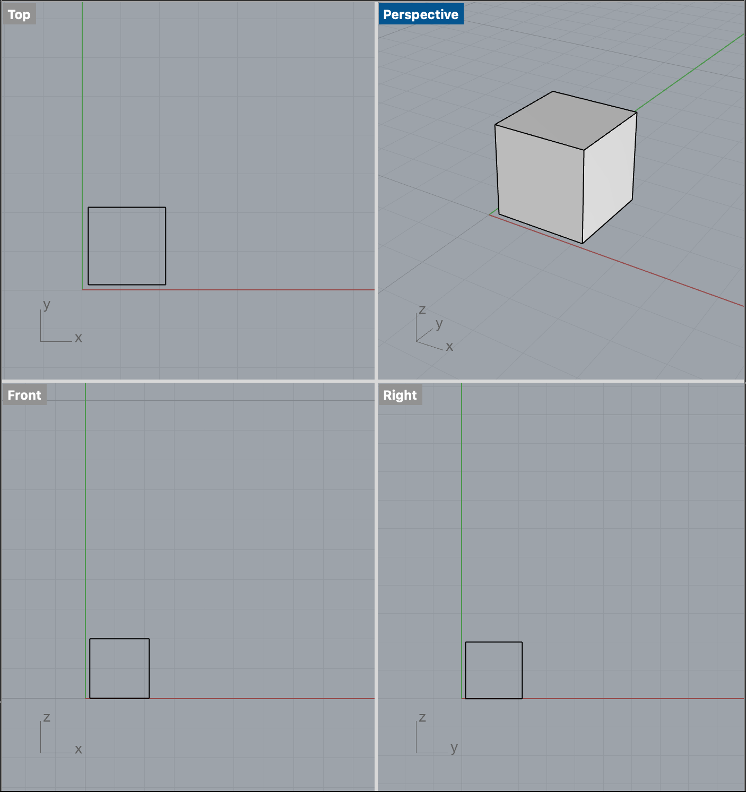
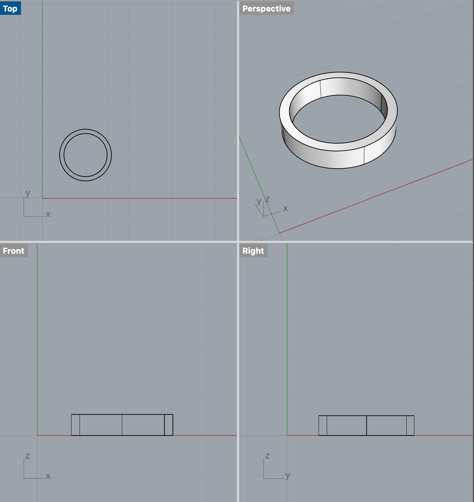
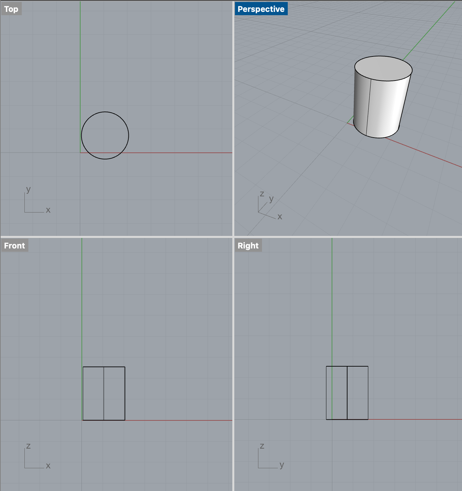

- about
- assignments
- resources
Assignment 2: Designing cubes, tubes, and cylinders
In this assignment, we were tasked to create test prints and simple dimension shapes to get some practice with printing and the different settings available. For some reason, when importing to Cura, the sizes translated into mm even when they were set as cm in Rhino, so I ended up converting it to match the cm scaling in Cura. I did not have any issues getting the filament to stick to the bed, but instead found that they stuck too well and I had a lot of trouble getting the first layers off after removing the print.
Cubes
The first part of the assignment focused on printing a cube with varying qualities (low, standard, high) and one with a concentric top and bottom layer. This process took a bit of calibrating and tuning to ensure it was level and printing correctly. One thing I noticed was that the brim wasn't aligned to be directly centered under the object of any of the prints for some reason and the thin layer stuck to the print bed each time, making it hard to remove.
 cube.stl (Download)A 2cm cube with the standard "low quality" settings and a brim (gcode)
.png)
.png)
For this print, I selected the low quality setting, decreased the initial layer print speed from 20 mm/s to 10 mm/s, and added a brim build plate adhesion. Initially the .stl file loaded in a mm unit so converted that to cm using the scaling. This print took 25 minutes and using calipers measured in dimension to be L: 20.47mm W: 19.02mm H: 18.37mm.
A 2cm cube with the standard "standard quality" settings and a brim (gcode)
.png)
.png)
For this print, I selected the standard quality setting, decreased the initial layer print speed from 20 mm/s to 10 mm/s, and added a brim build plate adhesion. This print took 34 minutes and using calipers measured in dimension to be L:20.13mm W: 18.03mm H: 18.51mm.
A 2cm cube with the standard "high quality" settings and a brim (gcode)
.png)
.png)
For this print, I selected the high quality setting (opting for the dynamic one), decreased the initial layer print speed from 20 mm/s to 10 mm/s, and added a brim build plate adhesion. This print took 35 minutes and measured in dimension to be L: 20.01mm W: 18.31mm H:18.64mm .
A 2cm cube with a concentric top and bottom layer (gcode)
.png)
.png)
For this print, I selected the standard quality setting, decreased the initial layer print speed from 20 mm/s to 10 mm/s, and this time did not include a brim build plate adhesion. This print took 34 minutes and measured in dimension to be L: 19.99mm W: 18.29mm H:18.50mm.
Tubes
The second part of the assignment focused on printing tubes with two different extrusion wall thicknesses (single, double).
 tube.stl (Download)A tube 2cm in diameter and .5cm high with a single extrusion wall thickness (gcode)
.png)
.png)
For this tube, I set the wall thickness at 2mm (0.2cm). This tube started off fine but ended up coming out a bit messy - I’m thinking something went wrong with the wall thickness I had set and it didn’t know to create a wall and ended up in a looser shape. Printed it out again to see if it was just the initial print but the same thing happened the second time as well. Both prints took about 7 minutes. The outer diameter was measured by calipers to be 20.43mm and height to be 2.19mm.
A tube 2cm in diameter and .5cm high with a double extrusion wall thickness and random z-seam alignment. (gcode)
.png)
.png)
For this tube, I set the wall thickness at 4mm (0.4cm) with a random z-seam alignment. - When I printed the second tube, I thought it might be fine since the setting were a bit different this time, but the same thing happened here that happened in the first tube. This print took 6 minutes. The outer diameter was measured by calipers to be 20.13mm and height to be 2.16mm.
Cylinders
The third part of the assignment focused on printing cylinders with two different extrusion wall thicknesses (single, double).
 cylinder.stl (0.1cm tolerance) (Download) cylinder.stl (0.005cm tolerance) (Download)A cylinder 2cm in diameter exported with a 0.1cm tolerance, printed on its round side with supports (gcode)
/Cylinder (0.1cm tolerance).png)
.png)
For this cylinder, I rotated it on it's side after importing into Cura using the rotate tool and then added a support in the settings panel. This print took 19 minutes to print and measured in dimensions to be 11.37mm in diameter and 16.67mm in height.
A cylinder 2cm in in diameter exported with a 0.005cm tolerance (gcode)
/Cylinder (0.005cm tolerance).png)
.png)
For this cylinder, I left it upright as I had created it in Rhino to see if it would print differently when it was upright vs. on it's side. This print took 32 minutes to print and measured in dimensions to be 19.05mm in diameter and 23.89mm in height.
Hollowed object
The last part of the assignment focused on printing a cube with a hole through it.
20.0mm +/- 0.5mm cube with a 5.0mm +/- 0.5mm hole through it